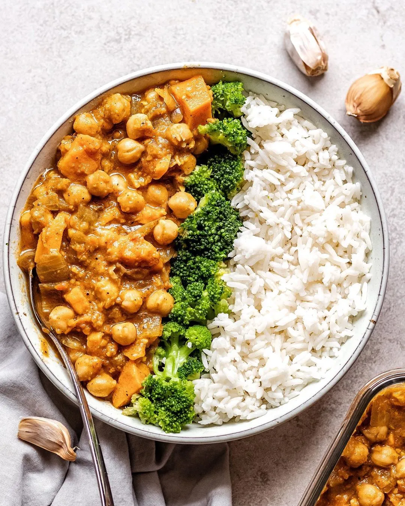

Vegan Sweet Potato Chickpea Curry

Description
Yummy vegan curry dish. Full of protein, iron and everything your body needs. Serve with basmati rice and naan bread.
Ingredients
- 3 tablespoons olive oil
- 1 onion, chopped
- 2 cloves garlic, minced
- 2 teaspoons minced fresh ginger root
- ¼ teaspoon red chile flakes
- 1 cup baby spinach
- 1 (15 ounce) can chickpeas, drained
- 1 (14.5 ounce) can diced tomatoes
- 1 (14 ounce) can coconut milk
- 1 sweet potato, cubed
- 1 tablespoon garam masala
- 1 teaspoon ground cumin
- 1 teaspoon ground turmeric
- ½ teaspoon salt
Steps
- Heat oil in a skillet over medium heat and cook onion, garlic, and ginger until softened, about 5 minutes.
- Add chickpeas, tomatoes, coconut milk, and sweet potato. Bring to a boil, reduce heat to low and simmer until tender, about 15 minutes.
- Season with garam masala, cumin, turmeric, chile flakes, and salt. Add spinach right before serving.